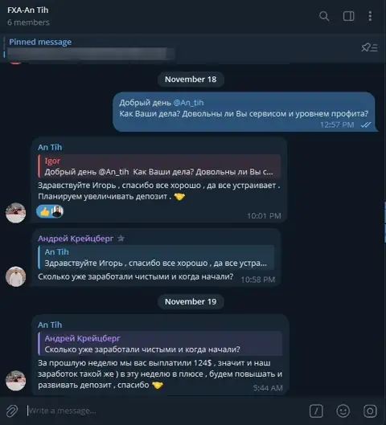
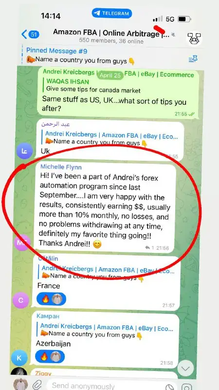
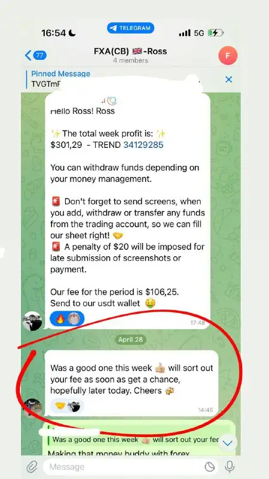
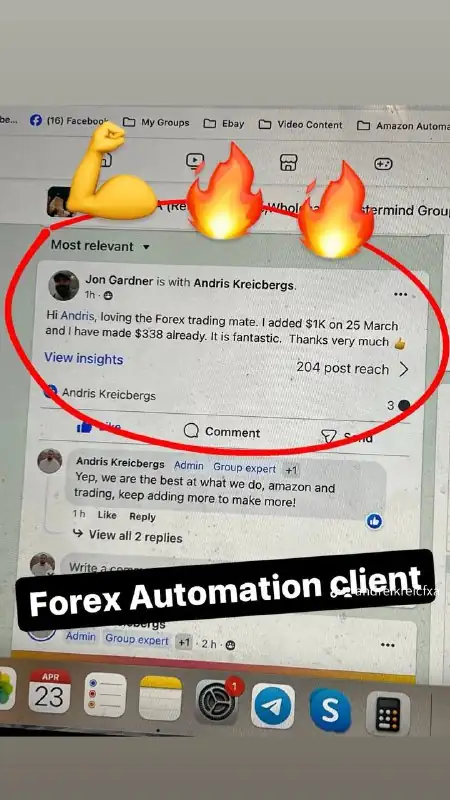
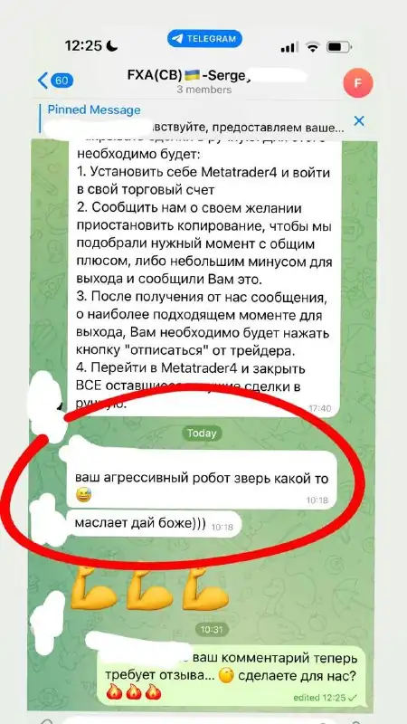
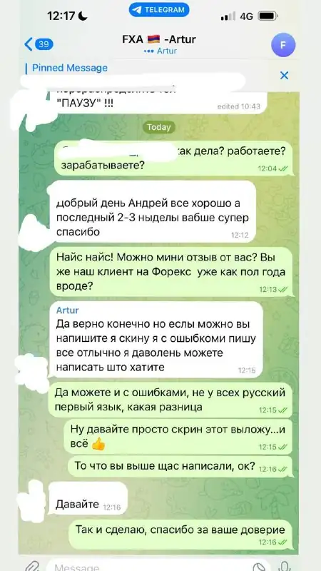
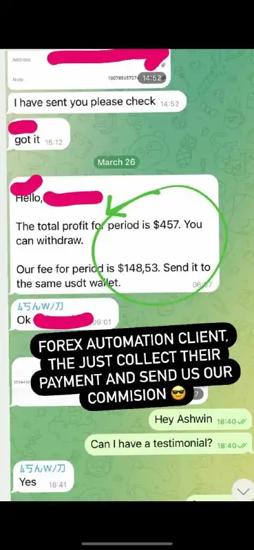

Müşterilerimiz
ne diyor
2022'den beri müşteri mesajlarının ve raporların düzenlenmemiş ekran görüntüleri. Tam boyutta açmak için bir görsele dokunun.

Teşekkürler, her şey yolunda ve memnunuz. Bakiyeyi artırmayı planlıyoruz. Geçen hafta $124 ücret ödedik, yani kazancımız da aynı oldu; bu hafta kârdayız.19.11.2026

Evet, ilk ay iyiydi: $1.000 yatırımda kâr paylaşımından sonra yaklaşık $120, net yaklaşık %12.18.11.2026

Evet, memnunum, teşekkürler, bir arkadaşımı bile getirdim. 1,5 yıl önce $15.000 bakiyeyle başladım, şimdi neredeyse $50.000: ücretinizden sonra $35.000 net kâr.13.11.2026

Daha dün para çektim, kâr bu öğleden sonra bankama geçti. Hizmetle ne kadar kazandığı sorulunca: $15.000.13.11.2026

Size bir güncelleme daha: %4,76, bu inanılmaz iyi. Keşke bunda 10K'm olsaydı. Sadece $100 ile elle işlem kopyalama; insanların bunu denememesi akıl alır gibi değil.13.11.2026

Bir müşteriye dönem ücreti $311,67 olan rapor. Müşteri: "Aldım, gönderip ekran görüntüsü paylaşacağım. $312 gönderdim, teşekkürler!"13.11.2026

Geçen eylülden beri forex automation programındayım ve sonuçlardan çok memnunum: istikrarlı, genelde ayda %10'un üzerinde ve istediğim zaman para çekmede hiç sorun yok.13.11.2026

Ne gün ama, sadece dövizde şimdiye kadarki toplam kârıma bakın, bir günde %1,26, her zamanki gibi muhteşem.13.11.2026

Önce şüpheliydim, özellikle büyük bir tutarla, ama benim için harikalar yarattı: $5K'm ayda $350–450 getiriyor. Paranızın tam kontrolü sizde, başka kimsede değil.13.11.2026

Her şey yolunda, sorun yok, nasıl gittiğinden hep memnunum. Döviz botunda 2 ayda 1.076 GBP artıdayım, yani 5K bakiyede %21,53.13.11.2026

Teşekkürler, fonlarımı şimdilik SmartStrike'ta bırakacağım. Forex automation ile para kazanıp kazanmadığı sorulunca: "Evet, kazandım."05.11.2026

Bir müşterinin hesabı ilk gününde: yaklaşık $10.000'lık bakiyede +$961,13 (+%9,63). Müşteri: "Etkileyici! Hesaba az önce giriş yaptım, bu bir ekran görüntüsü değil."14.07.2026

Bayılıyorum! SmartStrike'ta %21,69 ve IronPips'te %4,6. Şimdiye kadar çok etkilendim.25.04.2026

2 yıldır sizinleyim, tabii ki kazanıyorum!25.04.2026

İşlemlerin gidişatından çok memnunum: benim için düzenli ve güvenilir bir haftalık gelir haline geldi. Risk yönetimi birinci sınıf.10.12.2025

Sadece $1K yatırımla başlayıp 19 günde $400'ın üzerinde kâr, hiç uğraşmadan. SmartStrike sistemiyle de $2.400 yatırımla başlayıp $500'ın üzerinde kazandım.10.12.2025

Sonuçlardan da ekibin profesyonelliğinden de çok memnunum.10.12.2025

Neredeyse bir aydır birlikte çalışıyoruz ve önerilen sistemler beklentilerimizi karşılıyor. Ekip işini iyi biliyor. Uzun vadeli iş birliği umuyoruz.08.12.2025

Evet, biraz para kazanıyorum: ilk yatırımdan beri şimdiden yaklaşık %42,76. Kârın artıp artmayacağını görmek için biraz daha yatırmayı düşünüyorum.18.10.2025

Biraz kazanıyorum: yanılmıyorsam %7,54. Ekran görüntüsünde altın işlemlerinin geçmişi görünüyor.30.09.2025

Sunduğunuz hizmetler için ekibe teşekkür etmek istedim! Yaklaşık 30 günlük abonelikte yaklaşık %25'lik istikrarlı sonuç verdi.26.09.2025
Haziran 2024'ten beri şimdiye kadar %200 kazandım. Küçük bir yatırım olsa da yine de çok kâr ettim.26.09.2025

Evet, ilk hafta ve harika: $1.022'den $1.536 USD'ye, $515 kâr. Eşim de hesap açıyor, daha fazla para yatırmayı planlıyoruz.02.08.2025

Merhaba! Şimdiden %37,6 kazandırdığını görüyorum. Net olarak bu %18,8, $1.000'lık bakiyede $189,92.22.07.2025

Şimdiye kadar her şey yolunda! Önümüzdeki birkaç ay hiç para çekmeyip birikmesine izin vermeyi düşünüyorum. Şu an toplamda yaklaşık %37 olduğunu düşünüyorum.22.07.2025

Evet, sonuçlar gerçekten iyi: demo hesapta 2 haftada neredeyse $700.02.07.2025

Çalışmaya başladı, şimdiden +$20. Teşekkürler, sizinle karşılaştığıma sevindim.30.04.2025

İşler iyi: günde yaklaşık %1 getiri, bir ay önce yeni botla başladığımızdan beri yaklaşık $2K artıdayız. Bedava para gibi, herhangi bir mevduat hesabından iyi.26.02.2025

Ocak ayında Forex Automation programına katıldım ve düzenli kazanıyorum; ekip her zaman ulaşılabilir. Bakiyemi $20.000'a çıkarmayı planlıyorum. Her şey çok basit, otomatik pilotta para, tavsiye ederim.18.01.2025

Bu hafta harika bir haftaydı, ekip! Birkaç büyük drawdown yaşadık ama güzel toparlandık. Aşağıda kâr payı ödememin onayı ($1.121,44). Hepinize minnettarım!18.01.2025

Muhafazakâr hesaptan $2.500 çekildi. Bu programa bayılıyorum! $35K yatırımım var ve düzenli para çekmeye başlıyorum.15.05.2024

Para geldi! Az önce $9K daha çektim. Hizmetiniz olağanüstü; zor zamanlarda yoldan çıkmamama yardım ettiniz, teşekkürler.14.05.2024

1 Mart'tan 1 Mayıs'a kadar %40 kâr ettim, inanılmaz. $4,2K daha gönderdim, şimdi içeride $8K var.11.05.2024

Hesabın haftalık kârı $301,29. Müşteri: "Bu hafta iyiydi, ilk fırsatta ücretinizi halledeceğim."11.05.2024

Forex işlemlerine bayılıyorum. 25 Mart'ta $1K ekledim ve şimdiden $338 kazandım. Harika, çok teşekkürler.08.05.2024

Drawdown olduğunda güzel bir dönüş yaptınız. Daha fazla para yatıracağım.03.04.2024

17 Ocak 2024'te $1.000 ile başladım, şu an $1.186 var; 5 haftada neredeyse %12 net kâr.04.03.2024

22 Ocak 2024'te başladım ve $21.500 yatırdım, sonra bakiyeyi ikiye katlayıp $43.000 yaptım. Şu anki bakiye $48.500, yani $5.500 artış.02.03.2024

Forex botu şu an oldukça iyi gidiyor: $150 ile başladım, bakiyem şimdi $185,22. Yaklaşık bir buçuk ayda +%23; hizmetten çok memnunum.28.02.2024

Şimdiye kadar gerçekten iyi bir hizmet! En kısa zamanda yeniden para yatırmak istiyorum. Hizmetiniz tüm dünyada tanınmalı.10.02.2024

Harika! Size ödeme yapmayı seviyorum. İşte ücret ödemesini gösteren ekran görüntüsü, teşekkürler!31.01.2024

Her şey harika, saat gibi çalışıyor ve çok memnunum. Sermayemle ayda %20 kazanma fırsatı buldum, teşekkürler!27.01.2024

Genelde şüpheci biriyimdir ama geçen aralık ayında $200 ile katıldım. Bugün itibarıyla hesabımda $430 var; 1,5 ayda başlangıç yatırımımın iki katından fazla.27.01.2024

Forex Automation'ı tavsiye etmek istiyorum. Denemek için $100 ile başladım ve gerçekten çalışıyor: bir aydan kısa sürede neredeyse +%20. Hizmeti kullanmaya devam edeceğim.26.01.2024

Şüpheci olduğum için $100 ile başladım. Bir hafta içinde bot yaklaşık %10 kazandırdı, ben de daha fazla ekledim. Bir ay sonra getirim $581, yaklaşık %16. Pasif gelir elde etmenin harika bir yolu.15.12.2023

2 haftada, minimum sermayeyle botun seçimlerine göre açtığım birkaç pozisyonla toplam %32 kâr elde ettim. Ocak ayını iple çekiyorum.14.12.2023

Hizmeti harika buldum. En çok iletişiminizi takdir ediyorum: beni hep bilgilendirdiniz ve sorularımı yanıtladınız. Sizinle daha fazla yatırım yapmayı dört gözle bekliyorum.11.12.2023

Uzun zamandır pasif gelir arıyordum ve bazı şüphelerim vardı. $100 ile denedim ve hiç pişman olmadım: 4 ayda hesabımı yavaş yavaş $6.300'e çıkardım. Bu fırsat için teşekkürler!11.11.2023

Agresif robotunuz resmen canavar, gerçekten gaza basıyor!01.11.2023

İyi günler, her şey yolunda, son 2–3 hafta da harikaydı, teşekkürler. Her şey mükemmel, memnunum.01.11.2023

Evet, düşündüğümden biraz yavaş ama hiçbir şey yapmadan başka nerede böyle ek para kazanabilirsin ki?16.06.2023

Forex işlem hizmetini deniyorum ve neredeyse ilk günden beri kâr ediyorum. Tavsiye ederim: başlamak için sadece $100 yeterli ve kurulum bundan basit olamazdı.16.06.2023

Tüm işlemler kapanıp fonlar çekildikten sonra bir müşteri: harika iş için teşekkürler, size tekrar döneceğim.10.02.2023

Evet! Vay, dün harika bir gündü! Çok heyecan verici, herkese teşekkürler. Muhteşem bir sürpriz oldu.10.02.2023

Forex Automation hizmetini kullanıyorum. $5.000 ile başladım, gerçekten çalıştığını görünce daha fazla yatırdım. Şu an $16.000 işlemde; pasif gelir ve her şeyden memnunum.17.12.2022

Yeni başladık, daha ilk haftamız ama çok umut verici görünüyor: bir günde $700. İletişim de harika. Hesap ekran görüntüsünde +$777,92 (+%7,77) görünüyor.16.10.2022

Dört aydan uzun süredir bu hizmeti kullanıyorum: gerçek, güvenilir ve güvenmeye değer. Tam anlatıldığı gibi pasif gelir.02.09.2022

4 aydır kullanıyorum, ortalama haftada $200 kazandım. Tamamen otomatik, ana paramı istediğim zaman çekebiliyorum ve fonları yalnızca ben kontrol ediyorum.02.09.2022

Bir müşteriye haftalık rapor: üç hesapta (muhafazakâr, dövizler, metaller) $57,30, $282,07 ve $48,36 kâr. Müşteri ücreti gönderdiğini yazıyor.02.09.2022

Önce bunun da bir dolandırıcılık olduğunu düşündüm ama denemeye karar verdim. 45 gün sonra bakiyemi artırdım, tek pişmanlığım daha önce katılmamış olmak.02.09.2022

Bu hafta $449 kazandım. Uzun zamandır müşteriyim; tamamen pasif, hiçbir şeye dokunmam gerekmiyor.02.09.2022

Birkaç gün önce katıldım ve ilk kârımı bile aldım. Bütün işlemler benim yerime yapılıyor, hiçbir şey yapmam gerekmiyor. Hesap ekran görüntüsünde +$137,72 (+%1,37) görünüyor.02.09.2022

Bir müşteriyle yazışma: dönemin toplam kârı $457, müşteri raporu onaylıyor.02.09.2022

5 aydan uzun süredir programdayım: ben bakiyeyi sağlıyorum, ekip de işlem robotlarıyla hesabımı büyütüyor. Düzenli olarak ayda $1.000–1.800 kazanıyorum.02.09.2022

Program gerçekten çalışıyor ve benden hiçbir şey yapmamı istemiyor. Son 4 günde 5000'lik yatırımla toplam kâr $232 oldu.02.09.2022

Evet, para kazanıyoruz ve bu gerçekten harika.02.09.2022

Başlayalı 2 hafta oldu ve bu dönemdeki toplam kâr $300'ın üzerinde. Artık asıl işimin yanında pasif gelir olarak günde yaklaşık $50 kazanıyorum.02.09.2022

Hiçbir şey yapmadan bir haftada $487 kâr ettiğime inanamıyorum. Şimdiye kadar yaptığım en iyi yatırım!02.09.2022
Bir soruyla başlayın
Bize Telegram veya WhatsApp'tan yazın: ülkenize uygun bir aracı kurum ve size uyan bir risk modeli önerelim, 14 günlük demoyu kuralım ve başlamanıza yardımcı olalım.
Telegram üzerinden yazın